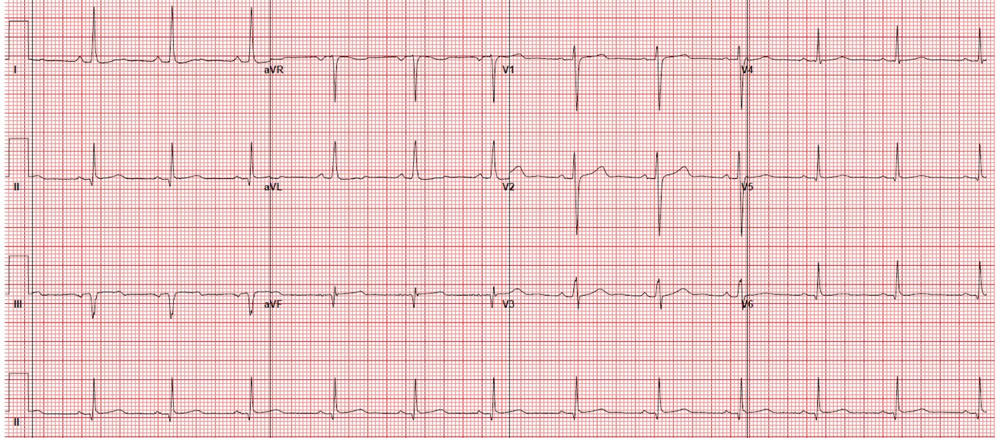
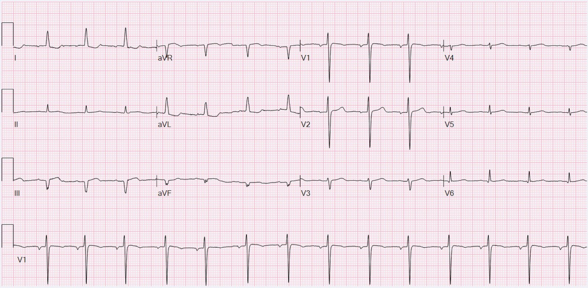
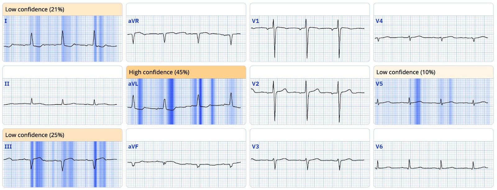
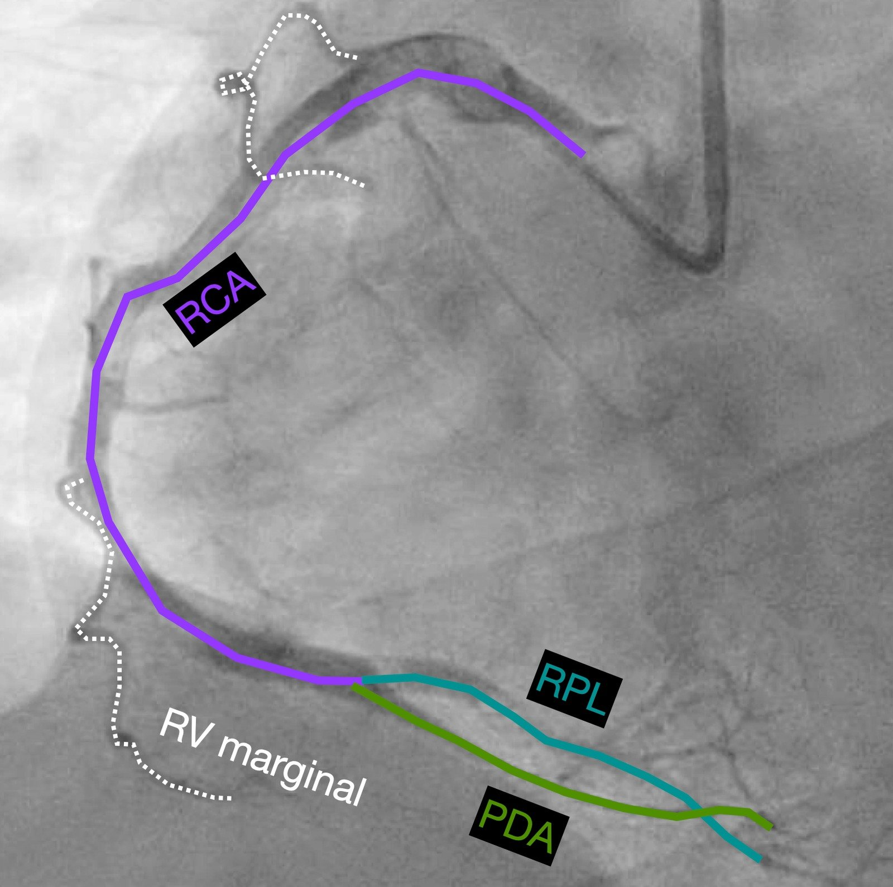
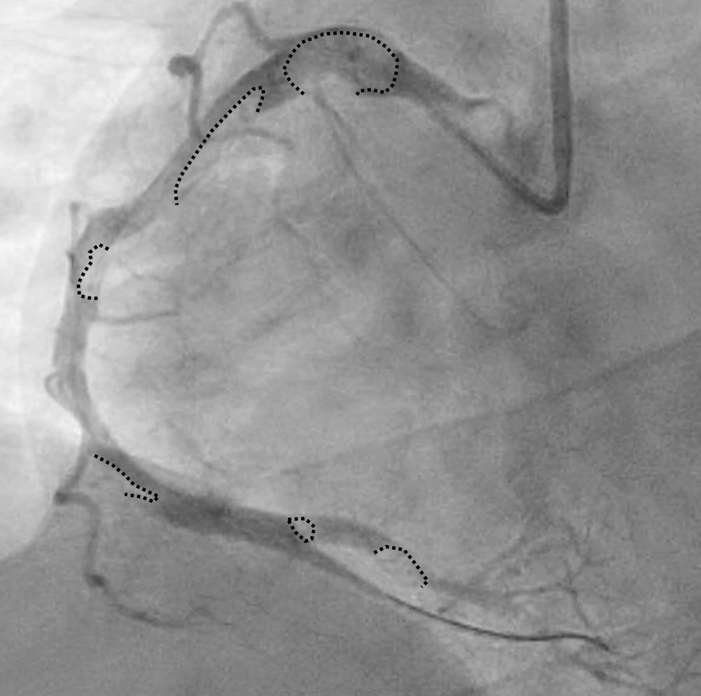
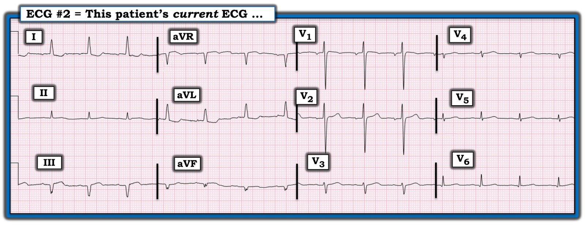
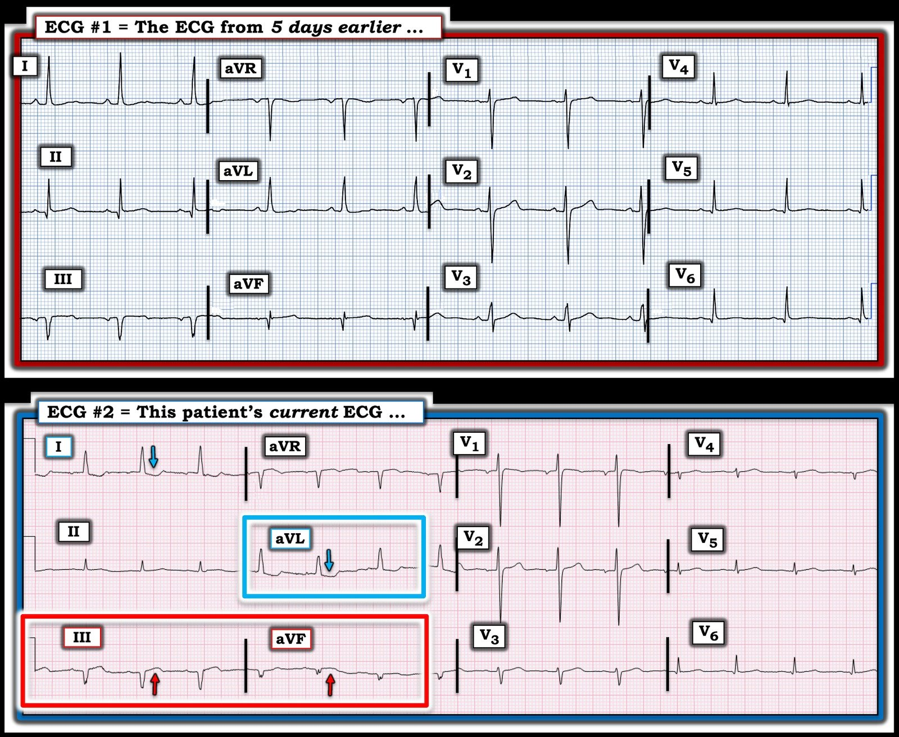

29/11/2024 — Nhồi máu cơ tim gần đây ở một cơ sở khác. Nay quay lại khoa cấp cứu vì đau ngực
Bản dịch tiếng Việt của bài "Recent MI at another facility. Now back in the ER with chest pain" – Dr. Smith’s ECG Blog. Giữ nguyên toàn bộ 8 hình ảnh và 2 video của bản gốc.
Tác giả: Willy Frick
Một phụ nữ trẻ có tiền sử đái huyết sắc tố kịch phát về đêm (paroxysmal nocturnal hemoglobinuria, PNH) đến khám vì đau ngực sau xương ức cấp tính.
Năm ngày trước, bệnh nhân đã đến một bệnh viện khác với biểu hiện tương tự. Bệnh nhân được chụp mạch vành, cho thấy tắc do huyết khối một nhánh sau thất phải (RPL), đã được hút huyết khối. Biên bản mô tả mảng xơ vữa nặng ở RCA đoạn gần trên siêu âm trong lòng mạch (IVUS), nhưng không có tổn thương ở nhánh RPL vừa bị tắc trước đó và không đặt stent. Điện tâm đồ của bệnh nhân sau thủ thuật được trình bày dưới đây:
Điện tâm đồ từ năm ngày trước


Smith: điện tâm đồ này cho thấy nhồi máu cơ tim thành dưới cũ với ST chênh lên tồn tại dai dẳng. Hình ảnh này phù hợp với phình thất trái thành dưới. Gần như chắc chắn đây không phải là tổn thương cấp.
Queen: Queen cũng không thấy OMI (không có “tương đương STEMI”)
Tiếp tục:
Lần này, bệnh nhân kể rằng khi đang đi vào nhà vệ sinh thì xuất hiện cảm giác đè nặng sau xương ức khởi phát đột ngột, lan lên cổ và cánh tay trái. Bệnh nhân mô tả cảm giác này giống hệt như cảm giác đã gặp năm ngày trước.


Bạn nghĩ gì?
Smith: Chỉ riêng điện tâm đồ này thôi, không cần so sánh với bản trước, đã đủ chẩn đoán OMI thành dưới cấp. Người ta có thể nghĩ đến nhồi máu cơ tim cũ (do có sóng QS ở III và aVF), nhưng kích thước sóng T ở chuyển đạo III (tổng “khối lượng” của nó) là quá lớn đối với một nhồi máu cũ.
Queen of Hearts nhận định là OMI đang diễn ra (active OMI)


So với điện tâm đồ sau thông tim trước đó, giờ đây chúng ta thấy:
- ST chênh lên (STE) và sóng T tối cấp kín đáo ở III
- ST chênh xuống (STD) soi gương và sóng T đảo ngược (TWI) mới xuất hiện ở I/aVL
Các thay đổi nguyên phát thì kín đáo, nhưng đặc biệt khi so sánh liên tiếp, các thay đổi soi gương (reciprocal) rõ ràng là “hoạt động” hơn hẳn trên bản ghi hiện tại. Nhất là trong bối cảnh lâm sàng này, điện tâm đồ có giá trị chẩn đoán OMI thành dưới cấp.
Smith: Cần kích hoạt phòng thông tim (cath lab) ngay bây giờ!
Troponin I độ nhạy cao (hsTnI) lúc nhập viện là 385 ng/L (tham chiếu < 35) và tăng lên 4951 trong đêm. Hồ sơ không ghi rõ bệnh nhân có còn đau ngực kéo dài trong thời gian này hay không. Không ghi lại điện tâm đồ nào. Cuối cùng bệnh nhân được đưa vào phòng thông tim 22 giờ sau điện tâm đồ có giá trị chẩn đoán.
Phim chụp RCA ở tư thế chếch trước trái – hướng đầu (LAO cranial)
Dưới đây là một khung hình tĩnh có chú thích giải phẫu:


Các đường chấm đen chỉ các vùng khuyết thuốc do huyết khối:


Biên bản thông tim mô tả huyết khối phần lớn đã tổ chức hóa và gánh nặng huyết khối lớn. Sau khi hút huyết khối, bệnh nhân được dùng alteplase trong mạch vành nhưng dòng chảy và gánh nặng huyết khối không cải thiện đáng kể. Trong suốt quá trình này, bệnh nhân bị rung thất (VF) nhiều lần và đã được khử rung 8 lần.
Nỗ lực lấy huyết khối kéo dài không thành công. Hình chụp mạch vành sau PCI được trình bày dưới đây.
Phim chụp RCA ở tư thế chếch trước trái – hướng đầu (LAO cranial) sau PCI
Đáng tiếc là dòng chảy vẫn chỉ ở mức TIMI 1. Chúng ta không biết liệu lấy huyết khối có thành công hơn không nếu được làm sớm hơn 22 giờ, lúc bệnh nhân mới đến với OMI.
hsTnI của bệnh nhân đạt đỉnh 23.788 ng/L. Siêu âm tim cho thấy giảm động thành dưới và dưới-vách với LVEF bảo tồn. Bệnh nhân được bắt đầu dùng eculizumab nhằm giảm nguy cơ huyết khối do bệnh khó thở kịch phát về đêm [người dịch: nguyên văn ghi “paroxysmal nocturnal dyspnea”, nhiều khả năng là lỗi đánh máy của “paroxysmal nocturnal hemoglobinuria” — đái huyết sắc tố kịch phát về đêm].
Bệnh nhân này phải đối mặt với một căn bệnh rất nặng nề (PNH). Ngay cả trong hoàn cảnh tốt nhất, bệnh có lẽ cũng đã khó kiểm soát. Nhưng việc để huyết khối “chạy trước” một quãng dài chẳng giúp ích gì.
Những điểm cần học:
- Phân biệt nhồi máu thành dưới cũ (điện tâm đồ 1) với nhồi máu cấp trên nền mạn (điện tâm đồ 2)
- Trì hoãn thời gian đến chụp mạch vành tạo thời gian cho huyết khối tổ chức hóa
- So sánh liên tiếp trong bối cảnh nhồi máu cơ tim tái phát

===================================
BÌNH LUẬN CỦA TÔI, bởi KEN GRAUER, MD (29/11/2024):
===================================
MẤU CHỐT của ca hôm nay nằm ở việc hỗ trợ đánh giá điện tâm đồ hiện tại của bệnh nhân hôm nay (ghi lúc bệnh nhân đến khoa cấp cứu) — bằng cách tìm một bản ghi để so sánh.
Hãy NHÌN lại Hình 1 — đây là điện tâm đồ mà bệnh nhân này có khi đến khám lần này.
- Bệnh nhân này đã được khám 5 ngày trước tại một bệnh viện khác, nơi bệnh nhân được hút huyết khối vì một biến cố cấp. Bệnh nhân đã xuất viện — nhưng nay đến một khoa cấp cứu khác vì CP cấp tính (đau ngực — Chest Pain) kèm điện tâm đồ hiện tại trình bày trong Hình 1.
CÂU HỎI:
- Vì sao lại DỄ bỏ sót các thay đổi cấp tính trên điện tâm đồ #2?


TRẢ LỜI:
Nếu điện tâm đồ hiện tại (trình bày trong Hình 1) là điện tâm đồ duy nhất bạn có — có thể dễ bỏ sót các thay đổi cấp tính vì: — i) Không thấy gì đáng báo động ở các chuyển đạo trước tim (biên độ phức bộ QRST rất nhỏ ở các chuyển đạo V4 đến V6); — ii) Sóng Q lớn thấy ở chuyển đạo III và aVF (thực ra là phức bộ QS, bị phân mảnh ở chuyển đạo aVF). Điều này phù hợp với tiền sử nhồi máu gần đây của bệnh nhân; — và, iii) Mức độ ST chênh lên ở chuyển đạo III và aVF là hạn chế. Tuy có ST chênh xuống ở chuyển đạo I và aVL — nhưng khó biết đây là thay đổi “mới” hay “cũ”.
- Tóm lại — Dù chỉ từ một điện tâm đồ này tôi không thể loại trừ khả năng có thêm một biến cố cấp khác — điện tâm đồ trong Hình 1 có thể hoàn toàn phù hợp với biến cố trước đó của bệnh nhân xảy ra 5 ngày trước.
Bản ghi để so sánh giúp ích như thế nào:
Tìm một bản điện tâm đồ gần nhất của bệnh nhân (ghi 5 ngày trước, vào lần nhập viện trước) — và đặt nó cạnh điện tâm đồ hiện tại (như chúng tôi làm trong Hình 2) — cho ngay một câu trả lời tức thì!
- Dù kín đáo khi xem riêng lẻ (như trong Hình 1) — ST chênh lên ở chuyển đạo III và aVF (các mũi tên ĐỎ trong Hình 2) — cùng ST chênh xuống soi gương ở chuyển đạo I và aVL (các mũi tên XANH) — rõ ràng là mới xuất hiện so với điện tâm đồ #1.
- NHẬN ĐỊNH: Dù có một số thay đổi về biên độ QRS, trục mặt phẳng trán và tăng tiến sóng R giữa 2 bản ghi trong Hình 2 — tôi không cho rằng khác biệt đó đủ để thay đổi kết luận không thể tránh khỏi rằng chuyển đạo III và aVF giờ đây có ST chênh lên nhẹ-nhưng-thật — và chuyển đạo I và aVL giờ đây có ST chênh xuống — những thay đổi đơn giản là không có mặt 5 ngày trước. Với bệnh sử CP mới kèm điện tâm đồ hiện tại của bệnh nhân — rõ ràng có chỉ định thông tim ngay.
ĐIỀU CỐT LÕI: Ca hôm nay là một ví dụ tuyệt vời cho thấy việc có sẵn một bản ghi để so sánh đôi khi có thể cho câu trả lời tức thì về điều gì là “mới” so với “cũ” — so với “mới chồng lên cũ”.

